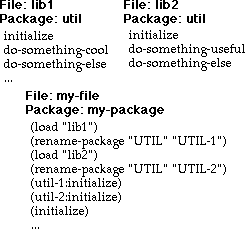

(/ 1 3) (+ (/ 7 11) (/ 13 31)) (defun factorial (n)
(/ 1 3) (+ (/ 7 11) (/ 13 31)) (defun factorial (n)(cond ((= n 0) 1)
(t (* n (factorial (- n 1))))))
(factorial 100)929638952175999932299156089414639761565182862536979208272
23758251185210916864000000000000000000000000
Это звучит странно, если это сказать. Разве компьютеры не всегда правильно обращаются с цифрами? Оказывается нет... Как правило, нет..
Числовые вычисления могут искажаться множеством различных способов. Одна из самых больших проблем заключается в вычислениях с числами с плавающей запятой (ваш язык может называть их real реальными числами, но это ложь). Существует, вероятно, вдвое меньше книг, написанных о правильном использовании вычислений с плавающей запятой, чем о визуальном-или чём-то объектно-ориентированном, и это очень много.
Проблема с числами с плавающей запятой заключается в том, что они не являются математически точными вещественными числами, но часто (и неправильно) используются так, как будто они есть. Основная проблема заключается в том, что числа с плавающей запятой имеют ограниченную точность- только несколько цифр справа от десятичной точки. Теперь, если все числа в вычислении имеют приблизительно одинаковую величину, то вычисление не потеряет точности. Но если эти числа имеют сильную разницу по величине, то вычисление с плавающей точкой приносит в жертву точность.
Предположим, что число с плавающей запятой на вашем компьютере имеет точность представления 7 десятичных цифр. Затем вы можете добавить 1897482.0 к 2973225.0 и получить совершенно точный ответ. Но если вы попытаетесь добавить 1897482.0 к 0.2973225, точный ответ будет состоять из четырнадцати цифр, в то время как ваш компьютер ответит: 1897482.0.
Другая проблема с числами с плавающей запятой является более тонкой. Когда вы пишете программу, вы пишете числа в базе 10. Но компьютер делает всю арифметику в базе 2. Преобразование из базы 10 в базу 2 делает забавные вещи с определенными "очевидно точными" числами. Например, десятичное число 0.1 является повторяющейся дробью при переводе в двоичный код. Поскольку компьютер не может хранить бесконечное число цифр, требуемое повторяющейся дробью, он не может хранить число 0.1 точно.
Целочисленная арифметика (целые числа) создает еще одну проблему в большинстве компьютерных языков - они имеют тенденцию накладывать ограничение на максимальное положительное или отрицательное значение, которое может содержать целое число. Итак, если вы попытаетесь добавить число один к самому большому целому числу, которое ваш язык позволяет обрабатывать компьютеру, произойдет одно из двух:
Так как же Лиспу удается делать правильные вещи с числами? В конце концов, похоже, что эти проблемы присущи всей компьютерной арифметике. Ответ заключается в том, что Lisp не использует только встроенные в компьютер арифметические операции - он добавляет определенные математически точные числовые типы данных:
Конечно, Лисп также имеет машинные целые числа и числа с плавающей запятой. Машинные целые числа в Lisp называются fixnums(фиксированными) числами. До тех пор, пока целое число попадает в числовой диапазон fixnum, Lisp будет хранить его как машинное целое число. Но если он становится слишком большим, Lisp автоматически переводит его в bignum.
Когда я сказал, что Lisp почти всегда делает правильные вещи с числами, я имел в виду, что он почти всегда выбирает числовое представление, которое является математически правильным:
1/3
(cond ((= n 0) 1)
(t (* n (factorial (- n 1))))))
929638952175999932299156089414639761565182862536979208272
23758251185210916864000000000000000000000000
Вы можете написать вычисления, чтобы использовать числа с плавающей запятой, но Lisp не будет автоматически превращать точный числовой результат в неточное число с плавающей запятой - вы должны попросить его. Числа с плавающей запятой contagious/заразны - как только вы вводите их в расчет, результат всего расчета остается числом с плавающей запятой:
Lisp печатает числа с плавающей запятой с десятичной запятой, а целые числа без нее
Базовый ввод/вывод Лиспа использует символьные знаки. Функции чтения
и записи превращают знаки в объекты Lisp и наоборот. READ-CHAR
и WRITE-CHAR читают и записывают одиночные знаки.
a
#\a
a
A
#\a
aError: Not a character
Мы ввели некоторые новые обозначения в вышеприведенных примерах. Какие?
Знак означает, что Lisp
ожидает ввода в ответ на функцию ввода, такую как READ.
Он немного отличается от
, который принимает
входные данные для вычисления и печати. Знак
указывает на знак
новой строки, генерируемый клавишей return или enter.
Знак указывает на вывод, который печатается, а не возвращается в виде значения.
Вы должны заметить, что новая строка завершает ввод данных для
READ. Это происходит потому, что READ
собирает символьные знаки, пытаясь сформировать полное выражение Lisp.
Подробнее об этом мы поговорим в Уроке 11.
В этом примере READ собирает символ, который заканчивается
знаком новой строки. Символ также может заканчиваться пробелом, скобкой
или любым другим знаком, который не может быть частью символа.
Напротив, READ-CHAR считывает ровно один знак из входных данных.
Как только этот знак получен, READ-CHAR завершает выполнение и возвращает символьный знак.
Некоторые системы Lisp могут потребовать, чтобы вы нажали клавишу return, прежде чем какой-либо ввод будет распознан. Это необычно, и часто может быть исправлено с помощью параметра конфигурации - обратитесь к поставщику Lisp.
WRITE и WRITE-CHAR оба возвращают полученное
значение. Но способ, которым они печатают значение, отличается.
WRITE печатает значение так, чтобы оно могло быть
представлено для READ, чтобы он мог создать то же самое значение.
WRITE-CHAR печатает только читаемый символьный знак,
без дополнительного синтаксиса Lisp #\), который
идентифицировал бы его для READ как символьный знак.
Lisp представляет один символьный знак, используя обозначение
#\char, где char - это литеральный символьный
знак или имя символьного знака, который не имеет печатаемого глифа(изображения).
Character Hex Value Lisp Standard? -------------------------------------------------------- space 20 #\Space yes newline -- #\Newline yes backspace 08 #\Backspace semi tab 09 #\Tab semi linefeed 0A #\Linefeed semi formfeed 0C #\Page semi carriage return 0D #\Return semi rubout or DEL 7F #\Rubout semi
Только #\Space и #\Newline требуются во
всех системах Lisp. Системы, использующие набор символьных знаков ASCII,
вероятно, реализуют и остальные коды символьных знаков, показанные выше.
Имя символьного знака #\Newline обозначает любое соглашение,
представляющее собой конец печатной строки на хост-системе, например:
System Newline Hex Value ----------------------------------- Macintosh CR 0D MS-DOS CR LF 0D 0A Unix LF 0A
94 печатаемых стандартных символа представлены следующим образом: #\char:
! " # $ % & ' ( ) * + , - . /
0 1 2 3 4 5 6 7 8 9 : ; < = > ?
@ A B C D E F G H I J K L M N O
P Q R S T U V W X Y Z [ \ ] ^ _
` a b c d e f g h i j k l m n o
p q r s t u v w x y z { | } ~
Если вам нужно организовать данные в таблицах двух, трех или более измерений, вы можете создать массив:
(NIL NIL NIL NIL)
(NIL NIL NIL NIL))
((ELEMENT 1 0) NIL NIL NIL)
((ELEMENT 2 0) NIL NIL NIL))
Вы создаете массив с помощью MAKE-ARRAY, который принимает
список измерений и возвращает массив. По умолчанию массив может содержать
любые типы данных; необязательные аргументы позволяют ограничить типы
данных элементов для повышения эффективности.
Ранг(rank) массива совпадает с его количеством измерений.
В приведенном выше примере мы создали массив ранга-2. Lisp печатает
массив, используя обозначение #rankA(...).
Содержимое массива отображается в виде вложенных списков, причем
первое измерение отображается как самая внешняя группировка,
а последнее измерение - как элементы самой внутренней группировки.
Ваша система Lisp, вероятно, не будет печатать массив с разрывами строк, как я показал здесь. Я добавил эти разрывы, чтобы подчеркнуть структуру массива.
Чтобы извлечь элемент массива, используйте AREF.
Первым аргументом AREF является массив; остальные аргументы
определяют индекс вдоль каждого измерения. Количество индексов должно
соответствовать рангу массива.
Чтобы задать значение элемента массива, используйте AREF
внутри формы SETF, как показано в Примере.
Чтение аналогично SETQ, кроме случаев, когда SETQ
присваивает значение символу, SETF присваивает
значение месту/place. В примерах форма AREF
указывает место в качестве элемента массива.
Векторы - это одномерные массивы. Вы можете создать вектор с помощью
MAKE-ARRAY и получить доступ к его элементам с помощью
AREF.
Lisp печатает векторы, используя слегка сокращенную форму
#(...), а не #1A(...).
Вы можете использовать либо одноэлементный список, либо число,
чтобы указать векторные размеры для MAKE-ARRAY -
эффект тот же.
Вы можете создать вектор из списка значений, используя форму VECTOR:
Это похоже на форму LIST, за исключением того, что
результатом является вектор, а не список. Есть и другие сходства между
списками и векторами: оба являются sequences/последовательностями.
Последовательностями управляют функции, которые мы увидим в
Главе 13.
Вы можете использовать AREF для доступа к элементам вектора
или использовать функцию, зависящую от последовательности, ELT:
Вы уже знаете, как написать строку с помощью синтаксиса двойных кавычек
"...".
Поскольку строка является вектором, вы можете применить функции массива и
вектора для доступа к элементам строки. Вы также можете создавать строки с
помощью функции MAKE-STRING или изменять символы или знаки на
строки с помощью функции STRING.
Мы видели в Уроке 5, что символ имеет уникальную идентичность, но когда он вновь встречается: символ идентичен любому другому символу, написанному таким же образом (включая название его пакета(package), о котором мы узнаем больше в конце этого урока). Это означает, что вы можете заставить Lisp читать программу или данные, и каждое появление символа с одинаковым написанием является одним и тем же символом. Поскольку Lisp предоставляет механизм для этого, это еще одна вещь, о которой вам нужно беспокоиться, когда вы пишете программу, которая манипулирует символьной информацией
В Уроке 5 мы также узнали, что символ может иметь значения в виде переменной и функции, а также для документации, печатного имени и свойств. Список свойств символа подобен миниатюрной базе данных, которая связывает несколько пар ключ/значение с символом. Например, если ваша программа представляет объекты и управляет ими, вы можете хранить информацию об объекте в списке его свойств:
COLOR RED)
Обратите внимание, что OBJECT-1 не имеет значения - вся полезная
информация находится в двух местах: identity(идентичности символа) и
свойствах символа.
Такое использование свойств предшествовало современному объектному программированию на несколько десятилетий. Оно обеспечивало два из трех основных механизмов объектов: идентификацию и инкапсуляцию (помните, что значения свойств могут также быть функцией). Третий механизм, наследование, иногда моделировался ссылками на другие "объекты".
Свойства всё реже используются в современных программах Lisp. Хэш-таблицы (см.ниже)), структуры (описанные в следующем разделе) и объекты CLOS (см. Главу 7 и Главу 14) обеспечивают все возможности списков свойств более простыми и эффективными способами. Современные системы разработки Lisp часто используют свойства для аннотирования программы, отслеживая определенную информацию, такую как файл и положение файла определяющей формы для символа, а также определение списка аргументов функции (для использования информационными средствами в среде программирования).
Структура Lisp позволяет создать объект, который хранит связанные данные в именованных слотах.
:size 'small
:color 'green
:weight 10
:shape 'square))
:POSITION NIL :WEIGHT 10)
В этом примере мы определили тип структуры с именем STRUCT-1
и слотами с именами COLOR, SHAPE, SIZE,
POSITION, and WEIGHT. Затем мы создали экземпляр
типа STRUCT-1 и присвоили его переменной OBJECT-2.
В остальной части примера показано, как получить доступ к слотам экземпляра
структуры с помощью функций доступа, названных по типу структуры и имени слота. Lisp генерирует функции make-structname и
structname-slotname при определении структуры с помощью
DEFSTRUCT.
Мы рассмотрим дополнительные функции DEFSTRUCT в
Глава 6.
Символ может быть связан с любым типом значения во время выполнения. В тех случаях, когда он имеет значение, Lisp позволяет запрашивать тип значения.
TYPE-OF возвращает символ или список, указывающий тип
его аргумента. Затем эта информация может быть использована для
руководства поведением программы в зависимости от типа ее аргументов.
Функция TYPECASE объединяет запрос о типе с диспетчеризацией,
похожей на COND.
С введением обобщенных функций в CLOS (см.
Главу 14), TYPE-OF уже не так важен, как раньше.
Хэш-таблица связывает значение с уникальным ключом. В отличие от списка свойств(property list), хэш-таблица хорошо подходит для большого числа пар ключ/значение, но страдает от чрезмерных накладных расходов для небольших наборов ассоциаций.
Вы создаете хэш-таблицу с помощью MAKE-HASH-TABLE и получаете
доступ к значениям с помощью GETHASH. GETHASH
возвращает два значения. Первое - это значение, связанное с ключом. Второе -
это T, если ключ был найден, и NIL в противном
случае. Обратите внимание на разницу между первой и последней формой
GETHASH в приведенных выше примерах.
По умолчанию хэш-таблица создается так, что ее ключи сравниваются с помощью EQ-это работает для символов, но не для чисел или списков. Подробнее о предикатах равенства мы поговорим в Главе 17. А пока просто помните, что если вы хотите использовать числа для ключей, вы должны создать хэш-таблицу с помощью формы:
(make-hash-table :test #'eql)
Если вы хотите использовать списки для ключей, создайте свою хэш-таблицу с помощью:
(make-hash-table :test #'equal)
Если вы хотите удалить ключ, используйте форму
(REMHASH key hash-table). И если вы
хотите изменить значение ключа, используйте GETHASH с
SETF, как если бы вы добавляли новую пару ключ / значение.
Одна из самых сложных вещей при написании программ-это присвоение имен частям вашей программы. С одной стороны, вы хотите использовать имена, которые легко запоминаются и напоминают о роли или назначении именованного объекта. С другой стороны, вы не хотите использовать имя, которое кто-то уже использовал (или, скорее всего, будет использовать) в другой программе, которую вам, возможно, когда-нибудь придется заставить работать с вашей программой.
Один из способов избежать конфликтов имен - дать каждому имени в вашей программе уникальный префикс, который вряд ли кто-либо будет использовать. Вы видите, что это делается все время с библиотеками - префикс обычно составляет от одного до трех символов. К сожалению, это все еще оставляет много места для двух разработчиков программного обеспечения, чтобы выбрать один и тот же префикс; тем более, что некоторые префиксы более выразительны, чем другие. Если у вас есть контроль над всем программным обеспечением, которое будет разработано для вашего продукта, вы можете выбрать все префиксы и избежать проблем. Если вы собираетесь купить стороннее программное обеспечение, использующее схему именования префиксов, вам придется обойти имена, выбранные вашими поставщиками, и надеяться, что два разных поставщика не столкнуться на одном и том же префиксе

Еще один способ избежать конфликтов имен-это использовать квалифицированные имена. Для этого язык должен обеспечивать поддержку отдельных пространств имен, определяемых и контролируемых программистом. Чтобы понять, как это работает, представьте, что все имена, которые вы создаете для своей программы, записываются на листе бумаги с вашим именем, написанным сверху в качестве заголовка-это квалификатор для всех ваших имен. Чтобы узнать, безопасно ли использовать имя, вам нужно только проверить список имен, которые вы написали на этой странице. Когда чье-то программное обеспечение нуждается в услугах вашей программы, они ссылаются на ваши имена, используя как ваш квалификатор, так и имя. Поскольку программное обеспечение другого человека имеет другой квалификатор, а его квалификатор неявен (то есть он не должен быть записан) для их собственных имен, нет никаких шансов на конфликт имен.
Вы можете подумать, что квалификатор-это не более чем сложный способ добавить префикс к имени. Однако есть тонкое, но важное отличие. Префикс - это часть имени; он не может быть изменен после записи. Квалификатор отделен от имен, которые он квалифицирует, и "записан" точно в одном месте. Кроме того, вы можете указать на "листе бумаги", на котором написаны имена, и ссылаться на него как на "эти имена"."Если вы случайно выбрали тот же самый квалификатор, что и другой программист, вы все еще можете ссылаться на "эти имена" с помощью квалификатора по вашему собственному выбору-другими словами, вы можете изменить квалификатор после того, как программное обеспечение будет поставлено для вашего использования.

В приведенном выше примере две библиотеки поставляются в файлах
LIB1 и LIB2. Оба разработчика библиотек
использовали имя UTIL для имени своего пространства
имен,известного в Lisp как имя пакета. В каждой библиотеке перечислены имена,
доступные клиенту. Программист, использующий эти две библиотеки, записывает
код в пакет с именем MY-PACKAGE. После загрузки каждой библиотеки
программист переименовывает ее пакет, чтобы имена были различны. Затем на имена
в библиотеке ссылаются с помощью их переименованных квалификаторов,
как мы видим в вызовах UTIL-1:INITIALIZE и
UTIL-2:INITIALIZE. Обратите внимание, что имя
INITIALIZE все еще доступно программисту в его неполной форме
-это эквивалентно MY-PACKAGE:INITIALIZE.
Lisp предоставляет эту функциональность черезю набора функций и макросов,
известных как средство package. Макрос DEFPACKAGE
удобно обеспечивает большинство операций с пакетами, в то время как макрос
IN-PACKAGE задает текущий пакет:
;;;; ---- File 1 ---- (defpackage util1 (:export init func1 func2) (:use common-lisp)) (in-package util1) (defun init () 'util1-init) (defun func1 () 'util1-func1) (defun func2 () 'util1-func2) ;;;; ---- File 2 ---- (defpackage util2 (:export init func1 func2) (:use common-lisp)) (in-package util2) (defun init () 'util2-init) (defun func1 () 'util2-func1) (defun func2 () 'util2-func2) ;;;; ---- File 3 ---- (defpackage client (:use common-lisp) (:import-from util1 func1) (:import-from util2 func2)) (in-package client) (defun init () 'client-init) (util1:init) (util2:init) (init) (func1) (func2)
В этом примере показано содержимое трех файлов. Файл 1 и файл 2 определяют
три функции, использующие одинаковые имена. Файл 1 помещает имена в пакет
UTIL1, в то время как файл 2 использует пакет UTIL2.
Форма DEFPACKAGE дает имя пакету. Параметр :USE
указывает, что имена из другого пакета могут использоваться без каких-либо
квалификаторов, в то время как параметр :EXPORT указывает имена,
которые доступны клиентам пакета.
Форма DEFPACKAGE создает только пакет. Форма
USE-PACKAGE делает пакет текущим - все неквалифицированные
имена находятся в любом пакете, который является текущим. Переменная
COMMON-LISP:*PACKAGE* всегда содержит текущий пакет..
Файл 3 создает пакет CLIENT. Опции :IMPORT-FROM
вводит определенные имена из пакетов UTIL1 и UTIL2
- эти имена могут использоваться без каких-либо квалификаторов в пакете
CLIENT. На имена, экспортированные из UTIL1 или
UTIL2, но не импортированные клиентом, все еще можно ссылаться в
CLIENT с помощью явного квалификатора пакета в форме:
package:name.
Этот раздел охватывал только самые основные операции с пакетами. Мы рассмотрим дополнительные детали в Глава 31, когда снова рассмотрим пакеты в контексте построения больших программных систем.